<!-- .quarto-title-block { -->
<!-- background-color: #123445; -->
<!-- padding: 20px; -->
<!-- border-radius: 5px; -->
<!-- } -->library(gridExtra)
library(here)here() starts at /Users/vkb/Dropbox/Varoon_Files/git/privacylens-whitepaperlibrary(magick)Linking to ImageMagick 6.9.12.93
Enabled features: cairo, fontconfig, freetype, heic, lcms, pango, raw, rsvg, webp
Disabled features: fftw, ghostscript, x11library(patchwork)
library(tidyverse)── Attaching core tidyverse packages ──────────────────────── tidyverse 2.0.0 ──
✔ dplyr 1.1.4 ✔ readr 2.1.5
✔ forcats 1.0.0 ✔ stringr 1.5.1
✔ ggplot2 3.5.1 ✔ tibble 3.2.1
✔ lubridate 1.9.4 ✔ tidyr 1.3.1
✔ purrr 1.0.2 ── Conflicts ────────────────────────────────────────── tidyverse_conflicts() ──
✖ dplyr::combine() masks gridExtra::combine()
✖ dplyr::filter() masks stats::filter()
✖ dplyr::lag() masks stats::lag()
ℹ Use the conflicted package (<http://conflicted.r-lib.org/>) to force all conflicts to become errorstheme_set(theme_linedraw())
#| fig-width: 12 # Adjust width (default is ~7)
#| fig-height: 5 # Adjust height if needed
#| fig.align: "center"1 Executive Summary
There are two primary research questions at hand. First, can the privacy scores output by PrivacyLens be trusted? Second, if there is reason to not dismiss the scores generated by PrivacyLens, what can be learned about the privacy of domains used to power Google Gemini’s AI summaries relative to domains served in organic search results?
This following analysis finds that there is some consistency (\(\rho = 0.33\)) between raw scores output by PrivacyLens via ChatGPT and those generated by Gemini when instructed to score the some domains using the same rubric. While these results suggest some grounds for reliability of the scores output by PrivacyLens, a proper validation study should be conducted with gold standard scores generated by experts.
Next, it appears as if Google Gemini uses domains with roughly consistent privacy scores on the whole when generating its AI summaries compared to the domains that appear in its search organic search results (pages 1 through 5). There may be evidence that relative to the first five pages of organic Google search results, domains used in Gemini summaries tend to have better privacy scores on the whole, though this trend is largely influenced by slightly higher-risk domains in the results on pages 3, 4, and 5. Relative to search results on pages 1 and 2, Gemini domains may be slightly weaker privacy-wise, but these observations cannot be made conclusively and would need more information to test robustly. When considering the proportion of specifically high-risk domains, the proprotion of high-risk domains shown to the user appears to increase when navigating further away from Google’s Gemini summaries. These observations should be validated through a more comprehensive, independent study that addresses some of the methodological challenges outlined below.
2 Motivation and Background
Google’s May 2024 blog post, “Generative AI in Search: Let Google do the searching for you” features a promotional video explaining the ways in which Gemini summaries will enhance work. The accompanying promotional video claims it will “simplify” search. The company reports that their experiments demonstrate that “with AI Overviews, people use Search more, and are more satisfied with their results.” The company also states that, “With AI Overviews, people are visiting a greater diversity of websites for help with more complex questions. And we see that the links included in AI Overviews get more clicks than if the page had appeared as a traditional web listing for that query.” (Google 2024) An estimated 1.5% of domains appear to land in Google’s AI overviews, suggesting a high degree of selectivity (Bæk 2025). In other words, relatively few domains appear in Google AI summaries, and linking to sources in Gemini’s overviews is associated with greater traffic to those links, suggesting that perhaps people are indeed visiting links embedded in Gemini’s summaries.
Against this backdrop, it is natural to ask how the privacy of websites used to power Gemini’s textual summaries compares to the privacy of websites appearing in Google’s search results. The analysis here addresses this question in two parts. First, it assesses the reliability of privacy scores generated by PrivacyLens. Next, it evaluates how the privacy scores of websites in Google’s Gemini summaries compares to the privacy scores of other Google search results.
3 Methodology
Before comparing the privacy scores of websites included in Gemini’s summaries and those in Google’s (sponsored and organic) search results, it is first necessary to assess the quality of the privacy score being used. Are these scores reliable, and what evidence justifies their use?
3.1 Consistency Check
Ideally, a robust validation study would have been conducted in which expert academics and grad students would manually score a handful of privacy policies subject to the same rubric given to PrivacyLens. These scores would be considered our sources of truth, and we could then compare PrivacyLens’s output scores against these gold standards.
Without the budget to conduct a proper study to hire experts, we decided to compare the outputs from PrivacyLens (the scores of which are output by ChatGPT) to those of another LLM, Google Gemini and measure the extent to which the scores demonstrated consistency with one another. Though this approach does not tell us whether the scores themselves are accurate, it could be a sign for the extent to which the scores are precise. Still, it is of course still possible that both Chat GPT and Gemini suffer from the similar imprecisions. Despite these methodological challenges, a collection of about 100 domains in recent Google search results were selected. Their privacy scores (raw scores from 0 to 68) were look up in PrivacyLens’s database and collected on Google Gemini using a variety of different Gemini models: 2.0 Flash, 2.0 Flash Thinking, 2.5 Pro, and Deep Research.
3.2 Gemini Summary Evaluation
To investigate patterns in the privacy scores from Google search results, domains across a variety of health-related queries were collected. In each case, the domains from the first five pages of results were stored, and each domain was associated with a source designating where in Google search the domain originated: Gemini Summary, Page 1 Organic, Page 2 Organic, Page 3 Organic, Page 4 Organic, Page 5 Organic, and Sponsored Result. The same domain could be associated with multiple sources. For example, if the same domain were included in a Gemini Summary and shown on Page 1 of the organic search results, the domain would be noted twice in the collected data. However, if the same domain appeared multiple times within the same section of the search results, as with Reddit in the example below, then the domain is counted only once. Future studies may wish to count domains in proportion to their relative appearance in search results.
The health-related queries used for this data collection exercise were:
- What does a rash on my arm mean?
- How to cope with anxiety?
- How to increase chances of getting pregnant?
- Tips to live with fibromyalgia
- What is intermittent fasting and how does it work?
- What are the benefits of acupuncture?
- What are the steps of a colonoscopy?
- How to appeal a denied insurance claim?
- How to rescue someone who is choking?
- What are the best at-home blood pressure monitors to purchase?
The results were collected from a signed-in Google account in Berkeley, California, in which search personalization and web app activity was turned off, as shown below.
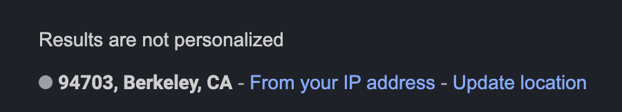
For the sake of reprodicibility, domains were extracted from the search results using an auto-generated script whose results were manually examined for accuracy. While the script occassionally misclassified Sponsored and Organic search results, it performed fairly on pages 2 through 5 of each query. However, it failed to cleanly distinguish between gemini_summary and organic_result_page_1 results. For this reason, these data were collected manually. All 50 .html files from the Google search results were archived using the Chrome plugin SingleFile and are available in here. The script used to extract domains is also available in our repository.
4 Results
4.1 LLM Consistency Results: Chat GPT vs. Gemini
The sample of domains used in this analysis deviates strongly from random. As Figure 1 shows, the distribution of domain scores is even (i.e,. \(\frac{1}{3}\) assigned to each category weak, moderate, and strong). Based on the data shown in the plot of scores by model alone (right), it appears as if Chat GPT scores websites more leniently. The proportion of domains scored weak by Gemini (about 38%) is distinctly in the scores output by Gemini relative to those of Chat GPT (about 24%).
cons_df <- read_csv("consistency_data.csv")Rows: 99 Columns: 5
── Column specification ────────────────────────────────────────────────────────
Delimiter: ","
chr (3): site, domain_name, gemini_version
dbl (2): chat_gpt_score, gemini_score
ℹ Use `spec()` to retrieve the full column specification for this data.
ℹ Specify the column types or set `show_col_types = FALSE` to quiet this message.scored_df <-
cons_df |>
gather("chat_gpt_score", "gemini_score", key = "LLM", value = "score") |>
mutate(score_category = case_when(
score > 56 ~ "strong",
score >= 40 & score <= 56 ~ "moderate",
score < 40 ~ "weak",
TRUE ~ "NA" # The default case
)) |>
mutate(score_category = factor(score_category,
levels = c("weak", "moderate", "strong"),
ordered = TRUE))
scored_llms_df <-
scored_df |>
pivot_wider(names_from = LLM, values_from = c(score, score_category)) |>
mutate(match_binary = case_when(
score_category_chat_gpt_score == score_category_gemini_score ~ "match",
TRUE ~ "no match" # The default case
)) |>
mutate(match_detail = case_when(
score_category_chat_gpt_score == score_category_gemini_score ~ "match",
score_category_chat_gpt_score > score_category_gemini_score ~
"chat_gpt_higher",
TRUE ~ "gemini_higher" # The default case
))combined_dist_plots <- score_dist_plot +
scores_by_model +
plot_layout(ncol = 2) +
theme_linedraw()
combined_dist_plots
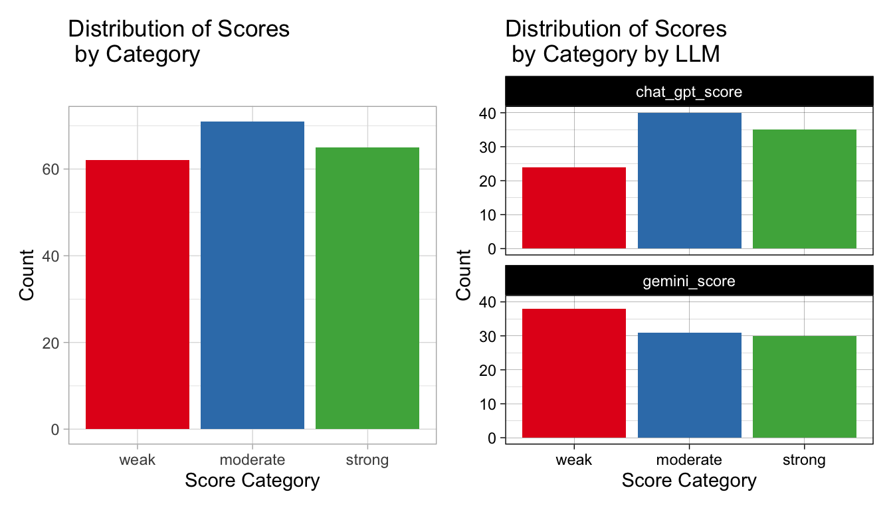
Among scores output by Google Gemini itself, the distribution of score buckets is not even across all model versions, as Figure 2 shows. For instance, Gemini 2.5 Pro appears most lenient, about 80% of domains scored by this version were classified as strong. However, it is possible that the privacy scores of the underlying websites did legitimately differ. To study this phenonenon more closely in the future, the same domain should be scored by different Gemini versions, much in the same way Chat GPT and Gemini are being compared against one another here.
within_model_score_plot
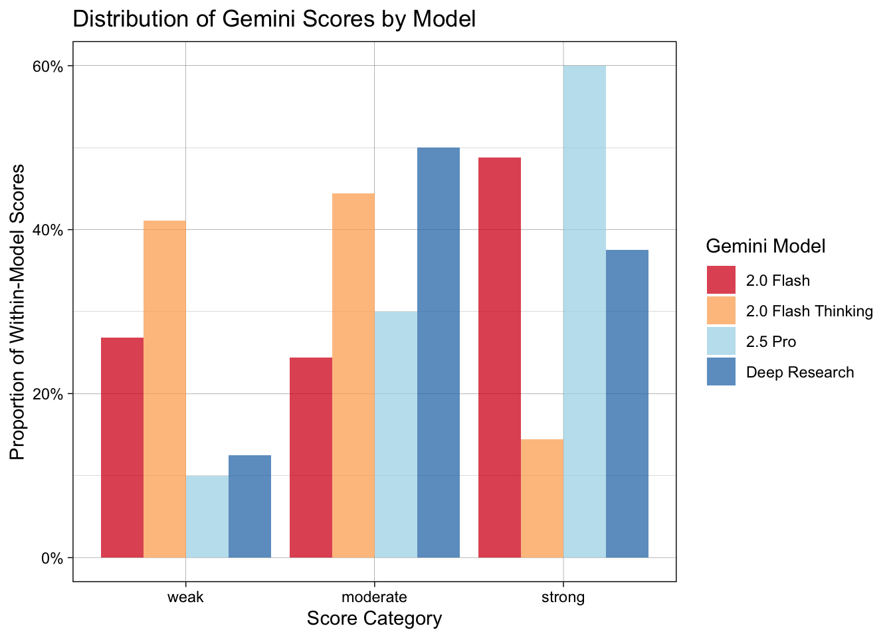
Figure 3 illustrates that the correlation of privacy scores output by Chat GPT and those output by Gemini is 0.33. If the scores had aligned completely (i.e, \(\rho\) of 1), then all the points would have fallen along the gray dotted line. The linear regression line is shown in blue. The points in green correspond to domains in which both models output the same score category, while those in orange diverge. A closer analysis of which sites are over-(under-)evaluated by which model is a natural follow-up to this observation.
llm_corr_plot`geom_smooth()` using formula = 'y ~ x'Warning in is.na(x): is.na() applied to non-(list or vector) of type 'language'
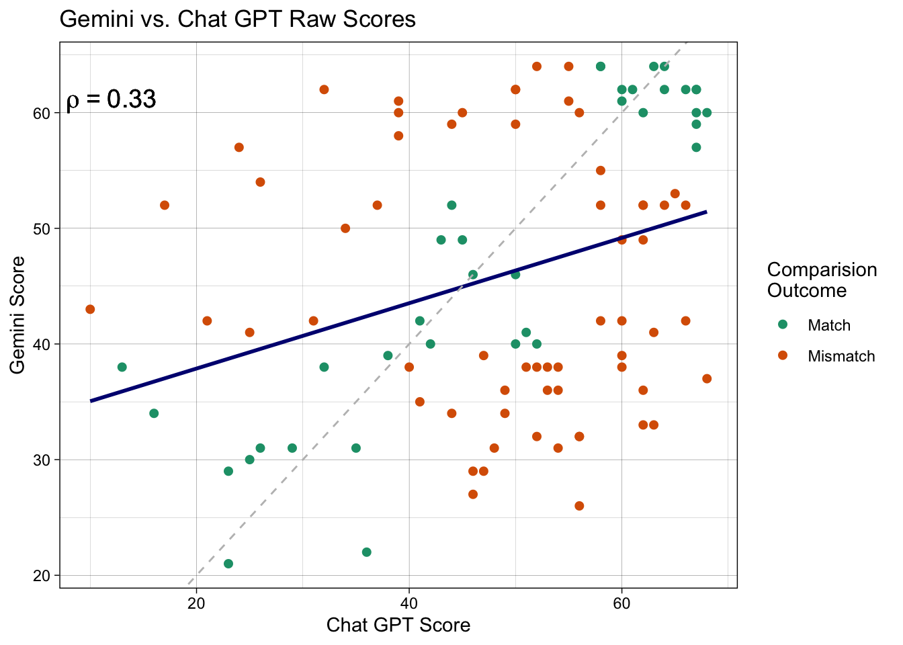
4.2 Gemini Summary Findings
The findings above considered score categories (weak, moderate, and strong), while the plots below show risk levels (low, medium, and high). These two metrics are directionally opposed. In other words, high risk is associated with weak privacy scores.
Of the ten search queries used to collect data here, Gemini summaries were generated for all but the final two (How to rescue someone who is choking?” and What are the best at-home blood pressure monitors to purchase?).
library(stringr)
queries <- c("What does a rash on my arm mean?",
"How to cope with anxiety?",
"How to increase chances\n of getting pregnant?",
"Tips to live with fibromyalgia",
"What is intermittent fasting\nand how does it work?",
"What are the benefits of acupuncture?",
"What are the steps of a colonoscopy?",
"How to appeal a denied insurance claim?",
"How to rescue someone who is choking?",
"What are the best at-home blood pressure\nmonitors to purchase?")
query_df <- cbind.data.frame(queries,
query = LETTERS[1:10])
unscored_breakdown_plt <-
read_csv("gdrive_whitepaper_data.csv") |>
distinct() |>
mutate(scored = ifelse(score <= 68, "scored", "not scored")) |>
group_by(query, source) |>
count(scored) |>
ungroup() |>
left_join(query_df) |>
mutate(queries = str_wrap(queries, width = 35)) |>
ggplot(aes(x = scored, y = n, fill = queries)) +
geom_col() +
facet_wrap(queries ~ ., nrow = 3) +
guides(fill = "none") +
xlab("PrivacyLens Scoring Status") +
ylab("Count") +
ggtitle("PrivacyLens Scoring Status by Query of Unique Domains")Rows: 652 Columns: 8
── Column specification ────────────────────────────────────────────────────────
Delimiter: ","
chr (6): l, query, domain_old, source, domain, top_level_domain
dbl (2): page, score
ℹ Use `spec()` to retrieve the full column specification for this data.
ℹ Specify the column types or set `show_col_types = FALSE` to quiet this message.
Joining with `by = join_by(query)`Of the 339 unique domains that appeared in the search results accross all 10 queries, PrivacyLens successfully retrieved and scored the privacy policies for 71% of them, illustrating the strong base of domain coverage within PrivacyLens. Due to the same domains appearing in different queries and / or different secctions of the search result within the same query, this coverage encompasses 79% of all the domains in the search result data.
The fraction of unscored websites appears roughly even across all sources (e.g., gemini_summary, organic_result_page_1, etc.) with the exception of sponsored results. However, because sponsored domains comprise only about 6% of all the domains collected, this discrepancy does not invalidate the following analysis.
As Figure 4 suggests, PrivacyLens may have better domain coverage for certain types of queries. Only 11% of the domains in the results to the query How to cope with anxiety? are unscored compared to 38% of the domains in the results for the query How to appeal a denied insurance claim? Because PrivacyLens has an in-built flywheel, domain coverage is poised to grow organically over time.
unscored_breakdown_plt
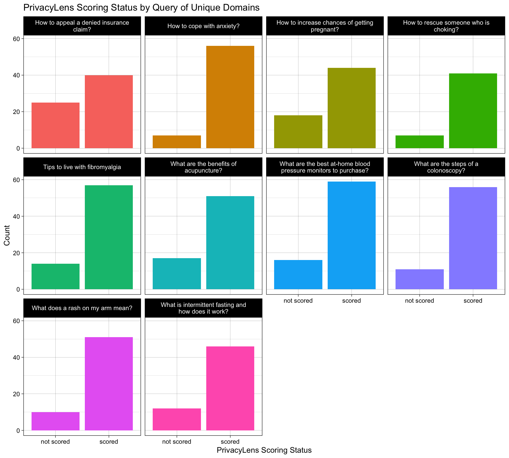
The distribution of domains per source in Google Search is shown in Figure 5. Despite the fact that only 8 of the 10 search queries resulted in results with Gemini summaries, the number of domains power Gemini summaries exceeds that of any other organic search result page. A few domains from sponsored results are noted here and disregarded in the rest of the analysis since the volume of sponspored domains is quite small and since we are primarily interested in evaluating the privacy of domains used to power Gemini relative to those in organic Google search results.
# Plot 1
domains_vol_by_source
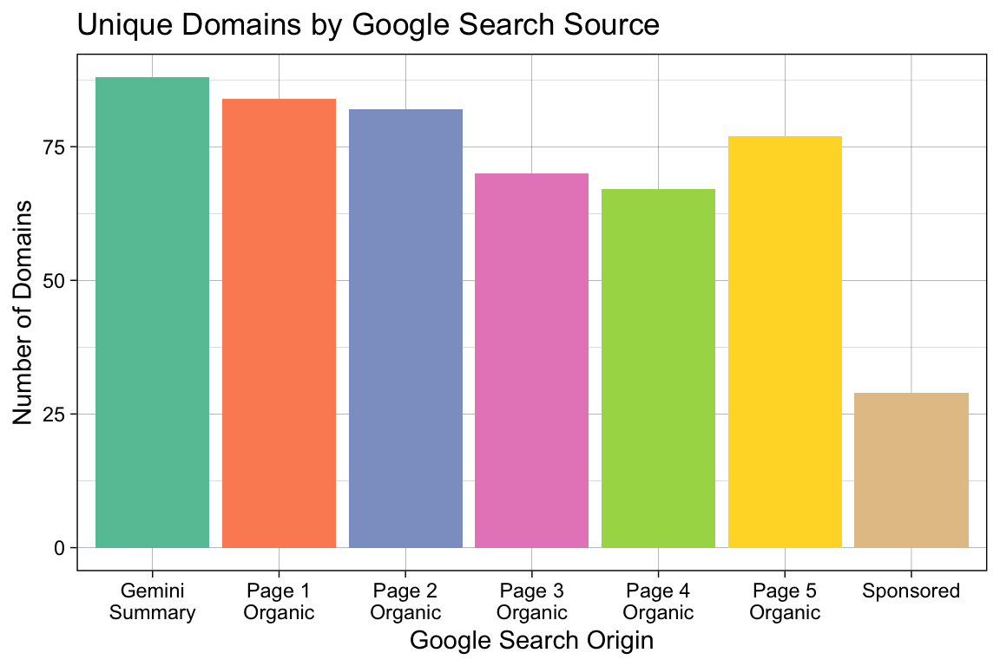
When collecting the data, it was observed that many of the same domains in the Gemini summary appear on page one of the organic search results, suggesting that perhaps Google uses popular sites to power Gemini. For several queries, Gemini used at least half of the domains in the page one organic search results for its AI summaries, as shown in Figure 6.
# Plot 2
gemini_overlap_plot
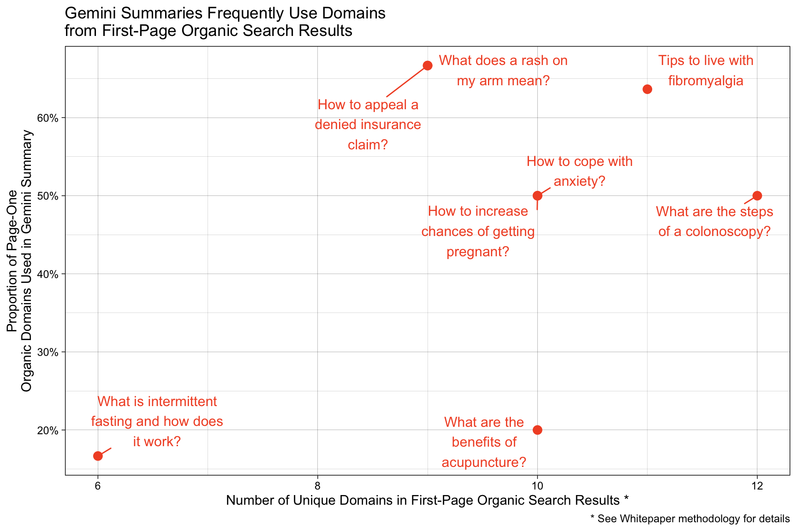
To better understand the overlap between domains used to power Gemini and those appearing on page one organic search results, we can classify each (non-sponsored) domain on the first page of Google search results as one that powers Gemini, one served in the organic search reuslts, or one that appears in both groups. The Venn diagram below illustrates classification.
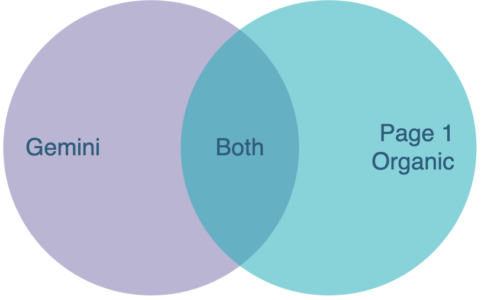
The plot below, Figure 7, shows how the risk categories of the domains in each of these groups is distributed. Note that plot treats each of these three three groups as mutually exclusive. (To be clear, if a domain appears in both Gemini’s summary and in page one organic search results, the domain belongs to the “Both” category only and not to all three categories.) Doing so allows us to compare these three groups against one another free of the interference of double-counting the same domain in two separate groups.
# Plot 3
score_by_origin
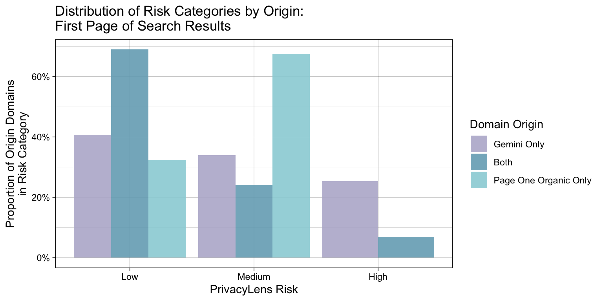
The distribution of risk categories by search section \ page are shown in Figure 8. In no sections of the search results do high-risk domains comprise the majority, which is favorable.
# Plot 4
scores_by_pg_plot
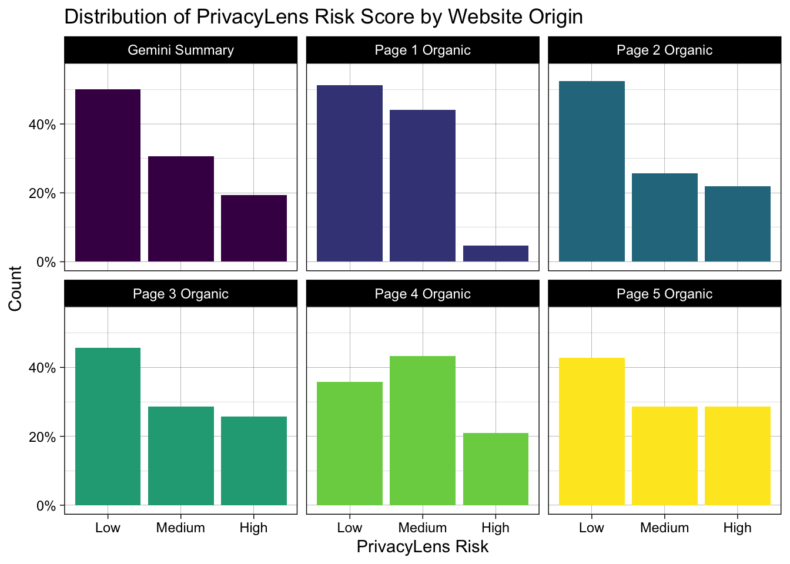
scoring_trend_df <- whitepaper_df |>
mutate(source = recode(source,
"gemini_summary" = "Gemini Summary",
"organic_result_page_1" = "Page 1 Organic",
"organic_result_page_2" = "Page 2 Organic",
"organic_result_page_3" = "Page 3 Organic",
"organic_result_page_4" = "Page 4 Organic",
"organic_result_page_5" = "Page 5 Organic",
"sponsored" = "Sponsored")) |>
group_by(source) |>
summarise(median_score = median(score),
num_domains = n_distinct(domain)) |>
ungroup() |>
mutate(group_num = as.numeric(factor(source))) |>
filter(source != "Sponsored") |>
mutate(source = str_wrap(source, width = 10))
scoring_model <- lm(median_score ~ group_num, data = scoring_trend_df)
trend_plot <- whitepaper_df |>
mutate(source = recode(source,
"gemini_summary" = "Gemini Summary",
"organic_result_page_1" = "Page 1 Organic",
"organic_result_page_2" = "Page 2 Organic",
"organic_result_page_3" = "Page 3 Organic",
"organic_result_page_4" = "Page 4 Organic",
"organic_result_page_5" = "Page 5 Organic",
"sponsored" = "Sponsored")) |>
mutate(source = str_wrap(source, width = 10)) |>
filter(source != "Sponsored") |>
ggplot(aes(x = source, y = score, fill = source)) +
geom_boxplot() +
guides(fill = "none") +
xlab("Search Result Source") +
ylab("Score") +
ggtitle("PrivacyLens Score by Source")As Figure 9 suggests, privacy scores are roughly consistent from one section of the search results to the next. There may be some evidence that privacy scores decrease as one navigates away from the Gemini summary / page one, but few users likely reach pages 4 and 5.
trend_plot
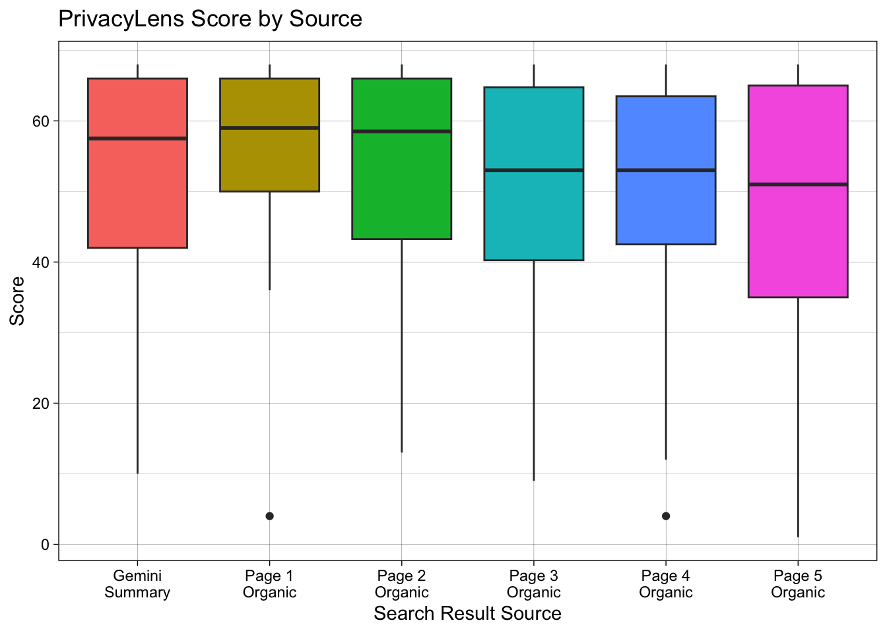
# imgs <- list.files(path = "score-gif", pattern = "*.png", full.names = TRUE) |>
# lapply(image_read) |> # Read images
# image_join() |> # Combine into an animation
# image_animate(fps = 1) # Adjust frames per second (fps)
# Save the GIF
# image_write(imgs, "score.gif")As shown in Figure 10, as the user navigates away from the Gemini summary, the proportion of high-risk domains shown to her as she navigates successive pages generally tends to increase, as the regression line indicates. The size of the point is proportional to the number of domains shown on the respective page across all search queries.
whitepaper_df |>
distinct() |>
filter(!source %in% "sponsored") |>
mutate(source = recode(source,
"gemini_summary" = "Gemini Summary",
"organic_result_page_1" = "Page 1 Organic",
"organic_result_page_2" = "Page 2 Organic",
"organic_result_page_3" = "Page 3 Organic",
"organic_result_page_4" = "Page 4 Organic",
"organic_result_page_5" = "Page 5 Organic",
"sponsored" = "Sponsored")) |>
group_by(source) |>
count(privacylens_risk) |>
group_by(source) |>
mutate(total_n = sum(n)) |>
ungroup() |>
mutate(prop = n / total_n) |>
group_by(source) |>
filter(privacylens_risk == "High") |>
ungroup() |>
mutate(x_marker = row_number()) |>
# filter(source %in% c("Gemini Summary", "Page 1 Organic", "Page 2 Organic")) |>
ggplot(aes(x = x_marker, y = prop, size = total_n)) +
geom_point(col = "#c84c09") +
geom_smooth(method = "lm", se = TRUE, size = 1,
color = "#420217", show.legend = FALSE, fill = "lightblue") +
scale_y_continuous(labels = scales::percent_format()) +
ggtitle("Proportion of High-Privacy-Risk Domains by Source") +
scale_size(name = "Total Domains") +
labs(x = "Source", y = "Proportion of High-Risk Privacy Domains") +
theme(axis.title.x = element_text(size = 14), axis.title.y = element_text(size = 14)) +
scale_x_continuous(breaks = c(1, 2, 3, 4, 5, 6),
labels = c("Gemini\nSummary", "Page 1\nOrganic", "Page 2\nOrganic", "Page 3\nOrganic", "Page 4\nOrganic", "Page 5\nOrganic")) +
theme_linedraw()Warning: Using `size` aesthetic for lines was deprecated in ggplot2 3.4.0.
ℹ Please use `linewidth` instead.`geom_smooth()` using formula = 'y ~ x'
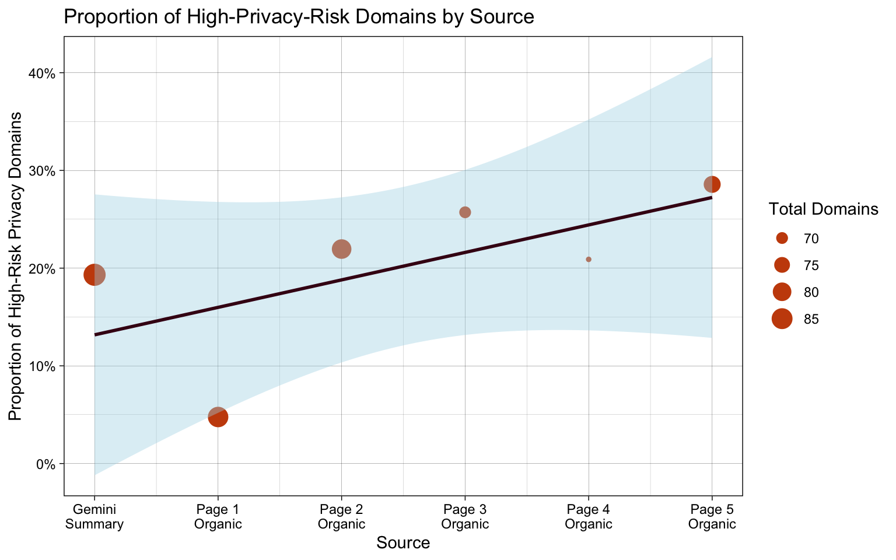
However, when analyzing results query-by-query, as shown in Figure 11, this aggregate trend does not always hold, though eight of the ten plots below have a negative slope. Still, to the extent that a user may accumulate multiple queries over time – as is the case for most users – the aggregate trend may not be spurious.
xval_df <- cbind.data.frame(x_val = c(1:6),
source = c("Gemini Summary", "Page 1 Organic", "Page 2 Organic", "Page 3 Organic", "Page 4 Organic", "Page 5 Organic"))
whitepaper_df |>
filter(!source %in% "sponsored_result")|>
mutate(source = recode(source,
"gemini_summary" = "Gemini Summary",
"organic_result_page_1" = "Page 1 Organic",
"organic_result_page_2" = "Page 2 Organic",
"organic_result_page_3" = "Page 3 Organic",
"organic_result_page_4" = "Page 4 Organic",
"organic_result_page_5" = "Page 5 Organic",
"sponsored_result" = "Sponsored")) |>
group_by(query, source) |>
count(privacylens_risk) |>
group_by(query, source) |>
mutate(total_n = sum(n)) |>
ungroup() |>
mutate(prop = n / total_n) |>
group_by(query, source) |>
filter(privacylens_risk == "High") |>
ungroup() |>
group_by(query) |>
left_join(xval_df) |>
ungroup() |>
mutate(query = recode(query,
"A" = queries[1],
"B" = queries[2],
"C" = queries[3],
"D" = queries[4],
"E" = queries[5],
"F" = queries[6],
"G" = queries[7],
"H" = queries[8],
"I" = queries[9],
"J" = queries[10])) |>
ggplot(aes(x = x_val, y = prop, size = total_n, col = query)) +
geom_point() +
geom_smooth(method = "lm", se = FALSE, size = 1,
color = "gray", show.legend = FALSE) +
facet_wrap(query~.) +
scale_x_continuous(breaks = c(1, 2, 3, 4, 5, 6),
labels = c("Gem.\nSum.", "Pg.\n1", "Pg.\n2", "Pg.\n3", "Pg.\n4", "Pg.\n5")) +
guides(color = "none") +
scale_size(name = "Total Domains") +
ggtitle("Proportion of High-Risk Privacy Domains by Query and Source") +
scale_y_continuous(labels = scales::percent_format()) +
xlab("") +
ylab("Proportion of High-Risk Privacy Domains") +
theme_minimal()Joining with `by = join_by(source)`
`geom_smooth()` using formula = 'y ~ x'Warning: Removed 4 rows containing non-finite outside the scale range
(`stat_smooth()`).Warning: Removed 4 rows containing missing values or values outside the scale range
(`geom_point()`).
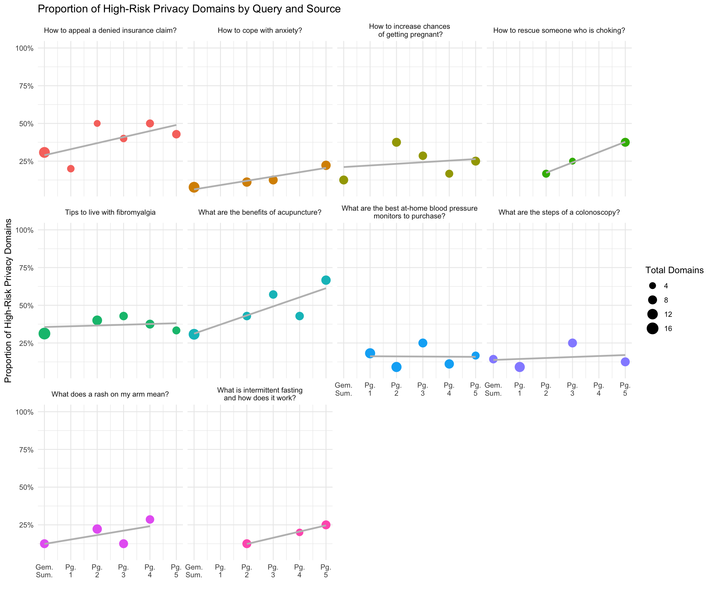
5 Discussion
The analysis above illustrates that some evidence of score consistency exists among different large language models, providing some assurance regarding the scores output by PrivacyLens. That said, while there is substantial room for greater consistency to be demonstrated, even perfect consistency (i.e., \(\rho = 1\)) is not a foolproof guarantee of accuracy. It is possible, for instance, that multiple LLMs generating these risk scores are similarly biased, leading to an outcome in which they demonstrate strong consistency with one another – in other words, they appear precise – but lack accuracy. A full validation study enlisting experts to score policies is best, and these gold standard evaluations can be used as a souce of truth against which the LLM risk scores can be measured.
Additionally, Gemini appears to generate summaries from domains with comparable privacy scores compared to domains that appear in Google’s organic search results (pages 1 through 5). Given the fact that the number of domains used to power Gemini is larger than the number of domains on any other page and that domains powering Gemini receive more clicks, as Google has published, there seems to be evidence that Google could improve the privacy risks to which it exposes its users by taking more proactive privacy-related metrics into account when ranking websites. There appears to be strong evidence that many page-one organic search result domains are used in Gemini summaries.
Future improvements to this work include addressing some of the methodological challenges (including an evaluation of these results using domain counts weighted by their frequency in search result pages), sampling a more representative group of domains, inspecting patterns in which domains are scored favorably by which LLMs, and conducting a proper validation study in which gold standard scores from experts can be compared against LLM outputs. A closer inspection at patterns among top-level domains, as shown in Figure 12 below, is an avenue for future research, as is assessing how these results adapt when accounting for the 29% of domains PrivacyLens failed to auto-score.
whitepaper_df |>
filter(top_level_domain %in% c("com", "org", "gov", "edu", "au", "uk")) |>
group_by(top_level_domain, privacylens_risk) |>
count(privacylens_risk) |>
ggplot(aes(x = privacylens_risk, y = n, fill = top_level_domain)) +
geom_col() +
facet_wrap(top_level_domain ~ ., scales = "free_y") +
scale_fill_brewer(palette = "Paired") +
xlab("PrivacyLens Risk") +
ylab("Proportion of Domains") +
labs(
title = "Distribution of Privacy Risk by Top-Level Domain",
subtitle = "Top-Level Domains with ≥ 10 domains in data") +
guides(fill = "none")
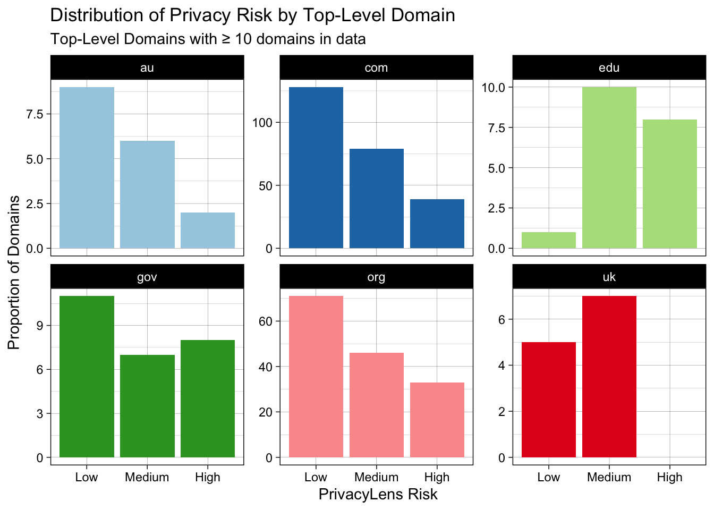
Studying how specific government websites, the sites of top American hospitals, and popular health sites fare with respect to privacy risk is all fodder for future work. Understanding the extent to which these results generalize to other countries, languages, and sectors (e.g., beyond healthcare) is a natural extension of this initial analysis.
6 Conclusion
The raw privacy scores output by PrivacyLens via ChatGPT share a 33% correlation with the scores output by Google Gemini for the same domains using the same set of scoring instructions. Evidence of LLM consistency may be a sign of precision, but because LLMs might be similarly biased, the observed consistency is not foolproof evidence of accuracy. While the evidence here disproves the idea that the scores output by PrivacyLens are random, a proper validation study with expert-generated gold standards is the best way to assess accuracy.
Furthermore, based on the data collected, there appears to grounds upon which to claim that domains used to power Google Gemini are roughly equal in privacy protections relative to domains in Google’s organic search results. For the Google queries used here, a substantial proportion of page one organic search result domains are used in Gemini summaries. As one navigates further away from the Gemini summary, results shown to the user generally appear to a higher proportion of high-risk domains, though this trend is not strictly monotonic.
7 References
Bæk, Daniel Højris. 2025. “AI Overviews Deliver MORE Traffic Than Featured Snippets, According to Study.” https://seo.ai/blog/ai-overviews-deliver-more-traffic-than-featured-snippets-according-to-study.
Google. 2024. “Generative AI in Search: Let Google Do the Searching for You.” https://blog.google/products/search/generative-ai-google-search-may-2024/.